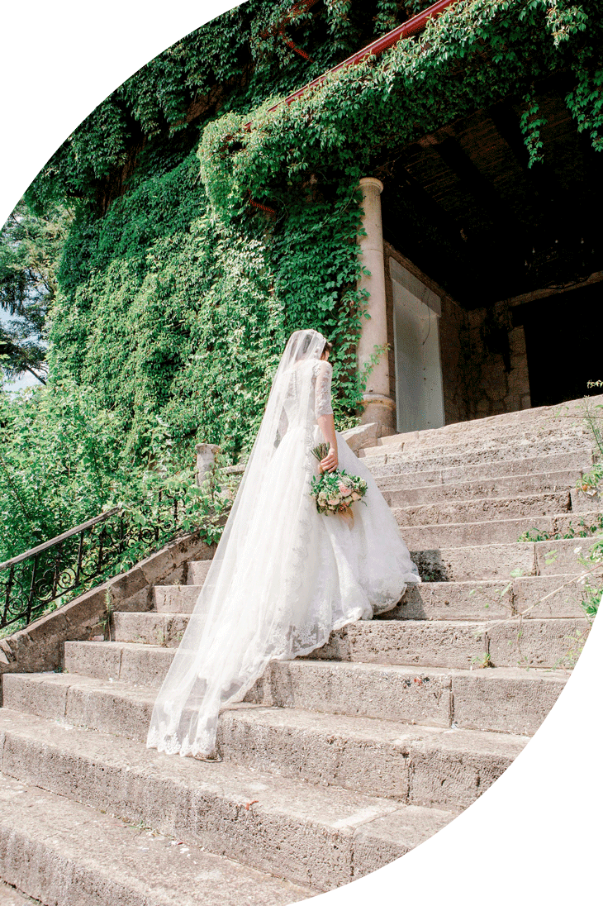
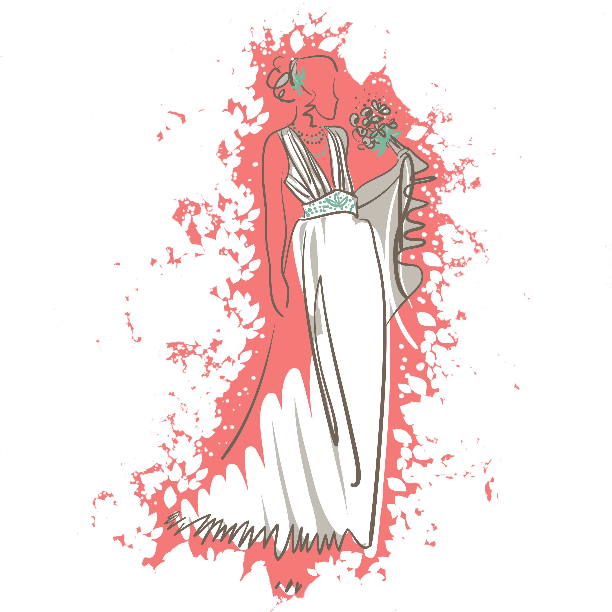
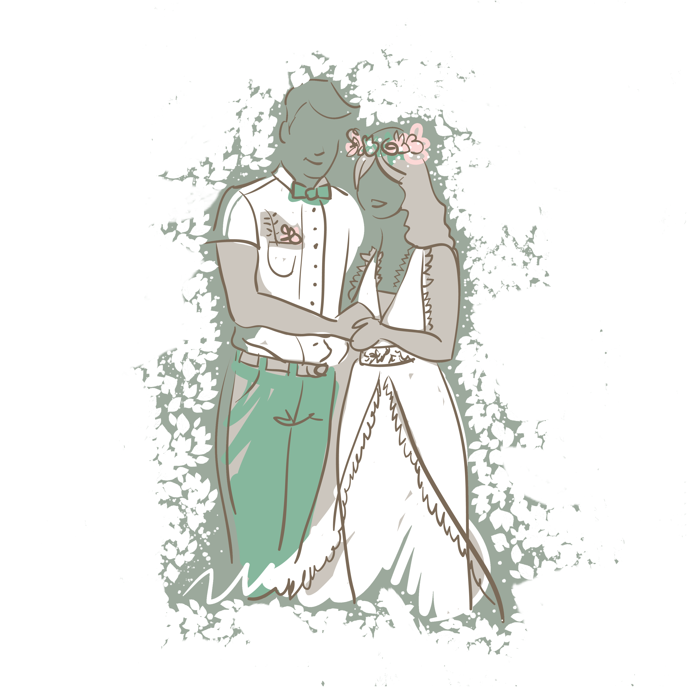

Découvrez SHIKHO MARIAGE COUTURIÈR : L' Art de la Robe de Mariée sur Mesure
Chez
Nous croyons que chaque mariage est unique et que votre robe doit le
refléter. Dès la première consultation, nous prenons en compte vos
envies, votre morphologie et vos attentes pour créer une robe sur
mesure. L'attention portée aux détails et aux matériaux de haute
qualité, 100 % français
 , est
notre signature. Notre objectif est simple : créer une robe à la fois
confortable et raffinée, qui vous fera briller le
jour J .
, est
notre signature. Notre objectif est simple : créer une robe à la fois
confortable et raffinée, qui vous fera briller le
jour J .

Les Étapes de Création d'une Robe de Mariée Unique
Afin de garantir une robe parfaitement adaptée à vos attentes, nous suivons un processus rigoureux de création en trois étapes clés :

1. Premier Essayage : Création sur Mesure
Nous commençons par une consultation personnalisée pour sélectionner le modèle et les tissus (mousseline de soie, satin, tulle, dentelle de Calais) qui mettront en valeur votre silhouette. Vos mensurations sont ensuite prises pour un ajustement parfait dès les premiers essais. (Astuce : n’oubliez pas de prévoir vos chaussures pour le deuxième essayage 😊)

2. Deuxième Essayage : Ajustements et Finitions
Votre robe prend forme dans les tissus choisis. Nous ajustons la coupe en fonction de vos retours, afin de garantir que chaque détail sublime votre silhouette. Ensemble, nous perfectionnons les finitions pour créer une robe vraiment unique.

3. Troisième Essayage : Perfection Finalisée
Lors de ce dernier essayage, nous finalisons les ajustements pour que tout soit impeccable. Vous repartirez avec une pièce unique, prête à vous accompagner pour votre jour exceptionnel.